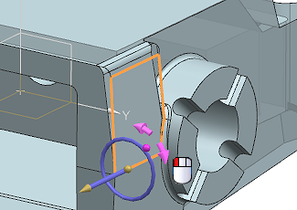
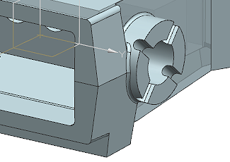

Edit the angle of faces
-
Select the face shown. Make sure the symmetric face is also selected.

-
For the Vector, select the edge shown.

-
Rotate the face inward at the top by 5 degrees.

Notice the symmetric angled face on the left side is rotating as well.
-
Use the same process to increase the angle of the lower angled side faces by 5 degrees.
